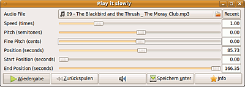

PlayItSlowly
Dieser Artikel wurde für die folgenden Ubuntu-Versionen getestet:
Ubuntu 16.04 Xenial Xerus
Ubuntu 14.04 Trusty Tahr
Zum Verständnis dieses Artikels sind folgende Seiten hilfreich:
Play It Slowly  ist ein kleines Python-Programm, mit dem Aufnahmen in anderen Tempi abgespielt werden können. Dabei kann die Tonhöhe gehalten, oder auch verändert werden; ebenso lässt sich ein Ausschnitt aus der Aufnahme wiedergeben. Die Ergebnisse können als .wav-Dateien gespeichert werden. Unterstützt werden alle GStreamer-tauglichen Formate, es kann theoretisch also auch für Videos verwendet werden. Nützlich vor allem für Musiker, die genau hören wollen, wie die Cracks spielen, Journalisten und alle anderen, die Transkripte erstellen müssen - oder einfach als "Party-Gag" (Tom Jones mit Mickymaus-Stimme, Madonna als Bierbass, Schnulzen im High-Speed-Sound etc.).
ist ein kleines Python-Programm, mit dem Aufnahmen in anderen Tempi abgespielt werden können. Dabei kann die Tonhöhe gehalten, oder auch verändert werden; ebenso lässt sich ein Ausschnitt aus der Aufnahme wiedergeben. Die Ergebnisse können als .wav-Dateien gespeichert werden. Unterstützt werden alle GStreamer-tauglichen Formate, es kann theoretisch also auch für Videos verwendet werden. Nützlich vor allem für Musiker, die genau hören wollen, wie die Cracks spielen, Journalisten und alle anderen, die Transkripte erstellen müssen - oder einfach als "Party-Gag" (Tom Jones mit Mickymaus-Stimme, Madonna als Bierbass, Schnulzen im High-Speed-Sound etc.).
Installation¶
Play It Slowly kann direkt aus den Ubuntuquellen über das Paket
playitslowly (universe )
 mit apturl
mit apturl
Paketliste zum Kopieren:
sudo apt-get install playitslowly
sudo aptitude install playitslowly
installiert[1] werden.
Nach erfolgreicher Installation findet sich z.B. in GNOME der Starteintrag unter "Anwendungen -> Unterhaltungsmedien -> Play It Slowly"
Bedienung¶
 Die Bedienung ist recht einfach: in "Audio File" das gewünschte Musikstück/Aufnahme auswählen. Mit den Schiebereglern "Speed (times)" die Geschwindigkeit und "Pitch (semitones)" die Tonhöhe (in Halbtonschritten) oder "Fine Pitch (cents)" (in Kleinstschritten) festlegen. Mit "Position (seconds)" kann beim Abspielen im Stück navigiert werden. "Start Position (seconds)" und "End Position (seconds)" dienen zur Festlegung für Ausschnitte, außerdem wird dort auch die Gesamtlänge des Titels angezeigt, allerdings nicht für das veränderte Tempo. Mit "Recent" lassen sich die zuletzt verwendeten Dateien wieder aufrufen.
Mit "Wiedergabe" wird gestartet und beendet; die Wiedergabe erfolgt in einer Endlosschleife. Mit "Zurückspulen" wird in 5-Sekunden-Schritten zurückgegangen. Das Programm hat einen eigenen Lautstärkeregler. Die Aufnahme lässt sich mit den gewählten Einstellungen als .wav-Datei abspeichern (das verwendete Format wird allerdings ggf. von CD-Brennprogrammen nicht erkannt, und müsste dann zum Brennen nochmals umformatiert werden).
Das Programm lässt sich auch aus dem Terminal heraus mit der gewünschten Aufnahme starten[6]:
playitslowly /PFAD/ZUR/GEWÜNSCHTEN/AUFNAHME
Probleme¶
Falls es Probleme bei der Wiedergabe gibt, kann PlayItSlowly auch aus dem Terminal mit Angabe des zu verwendenden Sinks verwendet werden, also z.B.
playitslowly "--sink=alsasink device=plughw:GT10"
oder
playitslowly "--sink=alsasink device=hw:1"
Es können auch andere als alsasinks verwendet werden.
Es kann vorkommen, dass das Tonhöhen-GST-Plugin (aus gstreamer10-plugins-bad) bei Veränderung der Tonhöhe abstürzt.
Tastenkürzel¶
| Play It Slowly | |
| Taste | Funktion |
| Alt + P | Play/Pause |
| Alt + E | Rewind (5 seconds) |
| 0 - 9 | Rewind (x seconds) |
Alternativen¶
OpenTranscribe liefert ähnliche Funktionen, allerdings keine Möglichkeit des Abspeicherns im neuen Tempo. Das Programm befindet sich zudem noch im Alpha-Stadium.
 Übersichtsartikel
Übersichtsartikel- Erstellt mit Inyoka
-
 2004 – 2017 ubuntuusers.de • Einige Rechte vorbehalten
2004 – 2017 ubuntuusers.de • Einige Rechte vorbehalten
Lizenz • Kontakt • Datenschutz • Impressum • Serverstatus -
Serverhousing gespendet von